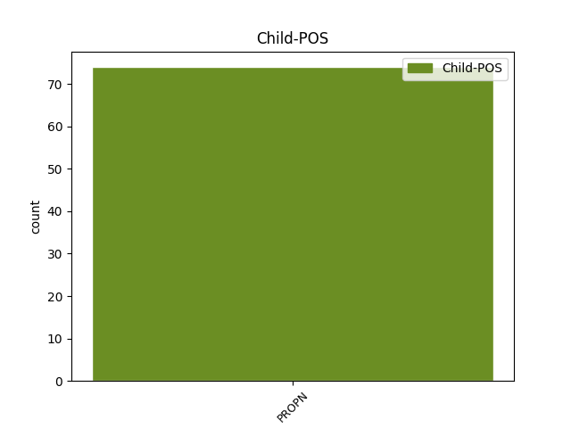

Distribution of features within this leaf

Agreement Rules sorted by frequency.
- When the dependent token is the flat multiword expression(flat) of the head token, and the dependent token is PROPN.
1 Agus _ _ _ _ 0 _ _ _
2 cò _ _ _ _ 0 _ _ _
3 a _ _ _ _ 0 _ _ _
4 nochd _ _ _ _ 0 _ _ _
5 air _ _ _ _ 0 _ _ _
6 an _ _ _ _ 0 _ _ _
7 àrd-ùrlar _ _ _ _ 0 _ _ _
8 ach _ _ _ _ 0 _ _ _
9 an _ _ _ _ 0 _ _ _
10 Leadaidh _ _ _ _ 0 _ _ _
11 Nic-an-Tughadair _ _ _ _ 0 _ _ _
12 agus _ _ _ _ 0 _ _ _
13 Am an DET Tdsm Gender=Masc|Number=Sing 0 _ _ _
14 Morair _ _ _ _ 0 _ _ _
15 Tormod Tormod PROPN Nn-mn Case=Nom|Gender=Masc 13 flat _ _
16 Tebbit _ _ _ _ 0 _ _ _
17 . _ _ _ _ 0 _ _ _
1 Chan _ _ _ _ 0 _ _ _
2 eil _ _ _ _ 0 _ _ _
3 teagamh _ _ _ _ 0 _ _ _
4 ann _ _ _ _ 0 _ _ _
5 nach _ _ _ _ 0 _ _ _
6 fhaigh _ _ _ _ 0 _ _ _
7 e _ _ _ _ 0 _ _ _
8 dreuchd _ _ _ _ 0 _ _ _
9 eile _ _ _ _ 0 _ _ _
10 bho _ _ _ _ 0 _ _ _
11 a _ _ _ _ 0 _ _ _
12 dheagh _ _ _ _ 0 _ _ _
13 charaid caraid NOUN Ncsmd Case=Dat|Gender=Masc|Number=Sing 0 _ _ _
14 , _ _ _ _ 0 _ _ _
15 Tonaidh Tonaidh PROPN Nn-mn Case=Nom|Gender=Masc 13 appos _ _
16 Blàrach _ _ _ _ 0 _ _ _
17 , _ _ _ _ 0 _ _ _
18 a _ _ _ _ 0 _ _ _
19 dh’aithghearr _ _ _ _ 0 _ _ _
20 mura _ _ _ _ 0 _ _ _
21 bheil _ _ _ _ 0 _ _ _
22 mi _ _ _ _ 0 _ _ _
23 air _ _ _ _ 0 _ _ _
24 mo _ _ _ _ 0 _ _ _
25 mhealladh _ _ _ _ 0 _ _ _
26 . _ _ _ _ 0 _ _ _
1 ’S _ _ _ _ 0 _ _ _
2 a’ _ _ _ _ 0 _ _ _
3 cumail _ _ _ _ 0 _ _ _
4 ceuma _ _ _ _ 0 _ _ _
5 ri _ _ _ _ 0 _ _ _
6 dè _ _ _ _ 0 _ _ _
7 a _ _ _ _ 0 _ _ _
8 thubhairt _ _ _ _ 0 _ _ _
9 Tonaidh _ _ _ _ 0 _ _ _
10 chàin _ _ _ _ 0 _ _ _
11 e _ _ _ _ 0 _ _ _
12 an _ _ _ _ 0 _ _ _
13 Riaghaltas riaghaltas NOUN Ncsmn Case=Nom|Gender=Masc|Number=Sing 0 _ _ _
14 gu _ _ _ _ 0 _ _ _
15 dubh _ _ _ _ 0 _ _ _
16 , _ _ _ _ 0 _ _ _
17 agus _ _ _ _ 0 _ _ _
18 Tonaidh Tonaidh PROPN Nn-mn Case=Nom|Gender=Masc 13 conj _ _
19 gu _ _ _ _ 0 _ _ _
20 sònraichte _ _ _ _ 0 _ _ _
21 . _ _ _ _ 0 _ _ _
Disagree Examples:
1 Chaidh _ _ _ _ 0 _ _ _
2 Tormod _ _ _ _ 0 _ _ _
3 a-null _ _ _ _ 0 _ _ _
4 chun _ _ _ _ 0 _ _ _
5 a' _ _ _ _ 0 _ _ _
6 chunntair _ _ _ _ 0 _ _ _
7 a _ _ _ _ 0 _ _ _
8 dh'òrdachadh _ _ _ _ 0 _ _ _
9 tuilleadh _ _ _ _ 0 _ _ _
10 ri _ _ _ _ 0 _ _ _
11 òl _ _ _ _ 0 _ _ _
12 , _ _ _ _ 0 _ _ _
13 is _ _ _ _ 0 _ _ _
14 nuair _ _ _ _ 0 _ _ _
15 a _ _ _ _ 0 _ _ _
16 thill _ _ _ _ 0 _ _ _
17 e _ _ _ _ 0 _ _ _
18 bha _ _ _ _ 0 _ _ _
19 Inis Inis PROPN Nn-fn Case=Nom|Gender=Fem 0 _ _ _
20 is _ _ _ _ 0 _ _ _
21 Iain Iain PROPN Nn-mn Case=Nom|Gender=Masc 19 conj _ _
22 ann _ _ _ _ 0 _ _ _
23 an _ _ _ _ 0 _ _ _
24 argamaid _ _ _ _ 0 _ _ _
25 , _ _ _ _ 0 _ _ _
26 esan _ _ _ _ 0 _ _ _
27 a' _ _ _ _ 0 _ _ _
28 cumail _ _ _ _ 0 _ _ _
29 a-mach _ _ _ _ 0 _ _ _
30 nach _ _ _ _ 0 _ _ _
31 robh _ _ _ _ 0 _ _ _
32 duine _ _ _ _ 0 _ _ _
33 no _ _ _ _ 0 _ _ _
34 àite _ _ _ _ 0 _ _ _
35 a _ _ _ _ 0 _ _ _
36 chuireadh _ _ _ _ 0 _ _ _
37 eagal _ _ _ _ 0 _ _ _
38 airsan _ _ _ _ 0 _ _ _
39 . _ _ _ _ 0 _ _ _
1 Agus _ _ _ _ 0 _ _ _
2 corra _ _ _ _ 0 _ _ _
3 uair _ _ _ _ 0 _ _ _
4 nochdadh _ _ _ _ 0 _ _ _
5 a _ _ _ _ 0 _ _ _
6 sheann _ _ _ _ 0 _ _ _
7 ghoistidh _ _ _ _ 0 _ _ _
8 , _ _ _ _ 0 _ _ _
9 Murchadh _ _ _ _ 0 _ _ _
10 a’ _ _ _ _ 0 _ _ _
11 Chlachair _ _ _ _ 0 _ _ _
12 , _ _ _ _ 0 _ _ _
13 a-nall _ _ _ _ 0 _ _ _
14 's _ _ _ _ 0 _ _ _
15 chuireadh _ _ _ _ 0 _ _ _
16 e _ _ _ _ 0 _ _ _
17 seachad _ _ _ _ 0 _ _ _
18 uair _ _ _ _ 0 _ _ _
19 a _ _ _ _ 0 _ _ _
20 thìde _ _ _ _ 0 _ _ _
21 no _ _ _ _ 0 _ _ _
22 dhà _ _ _ _ 0 _ _ _
23 an _ _ _ _ 0 _ _ _
24 cuideachd cuideachd NOUN Ncsfd Case=Dat|Gender=Fem|Number=Sing 0 _ _ _
25 Eachainn Eachainn PROPN Nn-mg Case=Gen|Gender=Masc 24 flat _ SpaceAfter=No
26 , _ _ _ _ 0 _ _ _
27 a' _ _ _ _ 0 _ _ _
28 còmhradh _ _ _ _ 0 _ _ _
29 air _ _ _ _ 0 _ _ _
30 seann _ _ _ _ 0 _ _ _
31 rudan _ _ _ _ 0 _ _ _
32 a _ _ _ _ 0 _ _ _
33 bh' _ _ _ _ 0 _ _ _
34 ann _ _ _ _ 0 _ _ _
35 leth-cheud _ _ _ _ 0 _ _ _
36 bliadhna _ _ _ _ 0 _ _ _
37 no _ _ _ _ 0 _ _ _
38 còrr _ _ _ _ 0 _ _ _
39 air _ _ _ _ 0 _ _ _
40 ais _ _ _ _ 0 _ _ _
41 , _ _ _ _ 0 _ _ _
42 's _ _ _ _ 0 _ _ _
43 a' _ _ _ _ 0 _ _ _
44 cur _ _ _ _ 0 _ _ _
45 earrainn _ _ _ _ 0 _ _ _
46 fhèin _ _ _ _ 0 _ _ _
47 dhan _ _ _ _ 0 _ _ _
48 toit _ _ _ _ 0 _ _ _
49 a _ _ _ _ 0 _ _ _
50 bha _ _ _ _ 0 _ _ _
51 a' _ _ _ _ 0 _ _ _
52 lìonadh _ _ _ _ 0 _ _ _
53 an _ _ _ _ 0 _ _ _
54 àite _ _ _ _ 0 _ _ _
55 . _ _ _ _ 0 _ _ _
1 Rinn _ _ _ _ 0 _ _ _
2 MacChoinnich _ _ _ _ 0 _ _ _
3 cumha _ _ _ _ 0 _ _ _
4 do _ _ _ _ 0 _ _ _
5 dh’Uilleam _ _ _ _ 0 _ _ _
6 MacAoidh _ _ _ _ 0 _ _ _
7 , _ _ _ _ 0 _ _ _
8 fear-ceasnachaidh _ _ _ _ 0 _ _ _
9 an _ _ _ _ 0 _ _ _
10 sgìre _ _ _ _ 0 _ _ _
11 Chròidh _ _ _ _ 0 _ _ _
12 , _ _ _ _ 0 _ _ _
13 a _ _ _ _ 0 _ _ _
14 chaochail _ _ _ _ 0 _ _ _
15 an _ _ _ _ 0 _ _ _
16 1798 _ _ _ _ 0 _ _ _
17 ; _ _ _ _ 0 _ _ _
18 cumha _ _ _ _ 0 _ _ _
19 do _ _ _ _ 0 _ _ _
20 Dhòmhnall _ _ _ _ 0 _ _ _
21 Friseal _ _ _ _ 0 _ _ _
22 , _ _ _ _ 0 _ _ _
23 fear-teagaisg _ _ _ _ 0 _ _ _
24 aig _ _ _ _ 0 _ _ _
25 an _ _ _ _ 0 _ _ _
26 SPCK _ _ _ _ 0 _ _ _
27 a _ _ _ _ 0 _ _ _
28 chaochail _ _ _ _ 0 _ _ _
29 an _ _ _ _ 0 _ _ _
30 1818 _ _ _ _ 0 _ _ _
31 ; _ _ _ _ 0 _ _ _
32 agus _ _ _ _ 0 _ _ _
33 , _ _ _ _ 0 _ _ _
34 rud _ _ _ _ 0 _ _ _
35 a _ _ _ _ 0 _ _ _
36 tha _ _ _ _ 0 _ _ _
37 car _ _ _ _ 0 _ _ _
38 annasach _ _ _ _ 0 _ _ _
39 a-measg _ _ _ _ 0 _ _ _
40 nam _ _ _ _ 0 _ _ _
41 marbhrannan _ _ _ _ 0 _ _ _
42 soisgeulach _ _ _ _ 0 _ _ _
43 aig _ _ _ _ 0 _ _ _
44 an _ _ _ _ 0 _ _ _
45 àm _ _ _ _ 0 _ _ _
46 seo _ _ _ _ 0 _ _ _
47 , _ _ _ _ 0 _ _ _
48 cumha _ _ _ _ 0 _ _ _
49 do _ _ _ _ 0 _ _ _
50 bhoireannach boireannach NOUN Ncsmd Case=Dat|Gender=Masc|Number=Sing 0 _ _ _
51 , _ _ _ _ 0 _ _ _
52 Seònaid Seònaid PROPN Nn-fn Case=Nom|Gender=Fem 50 appos _ _
53 Fhriseal _ _ _ _ 0 _ _ _
54 , _ _ _ _ 0 _ _ _
55 ' _ _ _ _ 0 _ _ _
56 bean _ _ _ _ 0 _ _ _
57 àraid _ _ _ _ 0 _ _ _
58 a _ _ _ _ 0 _ _ _
59 bh' _ _ _ _ 0 _ _ _
60 ann _ _ _ _ 0 _ _ _
61 an _ _ _ _ 0 _ _ _
62 Cùl-daothal _ _ _ _ 0 _ _ _
63 ' _ _ _ _ 0 _ _ _
64 . _ _ _ _ 0 _ _ _
1 Bha _ _ _ _ 0 _ _ _
2 luchd _ _ _ _ 0 _ _ _
3 siubhail _ _ _ _ 0 _ _ _
4 a' _ _ _ _ 0 _ _ _
5 fulang _ _ _ _ 0 _ _ _
6 thuirt _ _ _ _ 0 _ _ _
7 ministeir ministeir NOUN Ncsmn Case=Nom|Gender=Masc|Number=Sing 0 _ _ _
8 a' _ _ _ _ 0 _ _ _
9 chòmhdhail _ _ _ _ 0 _ _ _
10 Glenda Glenda PROPN Nn-fn Case=Nom|Gender=Fem 7 appos _ _
11 Jackson _ _ _ _ 0 _ _ _
12 ri _ _ _ _ 0 _ _ _
13 linn _ _ _ _ 0 _ _ _
14 cho _ _ _ _ 0 _ _ _
15 beag _ _ _ _ 0 _ _ _
16 airgead _ _ _ _ 0 _ _ _
17 's _ _ _ _ 0 _ _ _
18 a _ _ _ _ 0 _ _ _
19 chaidh _ _ _ _ 0 _ _ _
20 a _ _ _ _ 0 _ _ _
21 chur _ _ _ _ 0 _ _ _
22 a-steach _ _ _ _ 0 _ _ _
23 dhan _ _ _ _ 0 _ _ _
24 rèile _ _ _ _ 0 _ _ _
25 fo _ _ _ _ 0 _ _ _
26 'n _ _ _ _ 0 _ _ _
27 riaghaltas _ _ _ _ 0 _ _ _
28 Tòraidheachd _ _ _ _ 0 _ _ _
29 - _ _ _ _ 0 _ _ _
30 rud _ _ _ _ 0 _ _ _
31 a _ _ _ _ 0 _ _ _
32 thuirt _ _ _ _ 0 _ _ _
33 i _ _ _ _ 0 _ _ _
34 leis _ _ _ _ 0 _ _ _
35 a _ _ _ _ 0 _ _ _
36 robh _ _ _ _ 0 _ _ _
37 iadsan _ _ _ _ 0 _ _ _
38 a' _ _ _ _ 0 _ _ _
39 dèiligeadh _ _ _ _ 0 _ _ _
40 a-nise _ _ _ _ 0 _ _ _
41 . _ _ _ _ 0 _ _ _
1 Tha _ _ _ _ 0 _ _ _
2 ball _ _ _ _ 0 _ _ _
3 pàrlamaid _ _ _ _ 0 _ _ _
4 na _ _ _ _ 0 _ _ _
5 h-Alba _ _ _ _ 0 _ _ _
6 airson _ _ _ _ 0 _ _ _
7 Earra-Ghàidheal _ _ _ _ 0 _ _ _
8 is _ _ _ _ 0 _ _ _
9 Bhoid _ _ _ _ 0 _ _ _
10 , _ _ _ _ 0 _ _ _
11 Seòras _ _ _ _ 0 _ _ _
12 Lyon _ _ _ _ 0 _ _ _
13 , _ _ _ _ 0 _ _ _
14 a' _ _ _ _ 0 _ _ _
15 sireadh _ _ _ _ 0 _ _ _
16 coinneamh _ _ _ _ 0 _ _ _
17 ri _ _ _ _ 0 _ _ _
18 ministeir ministeir NOUN Ncsmd Case=Dat|Gender=Masc|Number=Sing 0 _ _ _
19 Còmhdhail _ _ _ _ 0 _ _ _
20 na _ _ _ _ 0 _ _ _
21 Dùthcha _ _ _ _ 0 _ _ _
22 , _ _ _ _ 0 _ _ _
23 Sarah Sarah PROPN Nn-fn Case=Nom|Gender=Fem 18 appos _ _
24 Boyack _ _ _ _ 0 _ _ _
25 , _ _ _ _ 0 _ _ _
26 agus _ _ _ _ 0 _ _ _
27 e _ _ _ _ 0 _ _ _
28 air _ _ _ _ 0 _ _ _
29 a _ _ _ _ 0 _ _ _
30 thighinn _ _ _ _ 0 _ _ _
31 am _ _ _ _ 0 _ _ _
32 follais _ _ _ _ 0 _ _ _
33 gu _ _ _ _ 0 _ _ _
34 bheil _ _ _ _ 0 _ _ _
35 ath _ _ _ _ 0 _ _ _
36 sgrùdadh _ _ _ _ 0 _ _ _
37 ga _ _ _ _ 0 _ _ _
38 dhèanamh _ _ _ _ 0 _ _ _
39 air _ _ _ _ 0 _ _ _
40 an _ _ _ _ 0 _ _ _
41 t-seirbheis _ _ _ _ 0 _ _ _
42 aiseig _ _ _ _ 0 _ _ _
43 eadar _ _ _ _ 0 _ _ _
44 Ceann _ _ _ _ 0 _ _ _
45 Loch _ _ _ _ 0 _ _ _
46 Cill _ _ _ _ 0 _ _ _
47 Chiarain _ _ _ _ 0 _ _ _
48 agus _ _ _ _ 0 _ _ _
49 Baile _ _ _ _ 0 _ _ _
50 a’ _ _ _ _ 0 _ _ _
51 Chaisteal _ _ _ _ 0 _ _ _
52 . _ _ _ _ 0 _ _ _